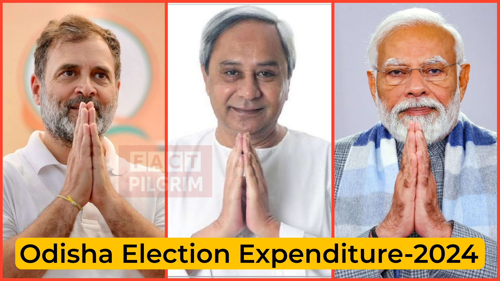

local
Odisha Assembly Elections 2024: Comprehensive Expenditure Analysis
Published on December 1, 2025

The 2024 Odisha Assembly election expenditure affidavits reveal how political parties financed and executed their campaigns, offering an unprecedented look into spending patterns across BJD, BJP, INC, CPI(M), and others. The data exposes sharp contrasts in campaign styles, from high-intensity public meetings to minimal digital outreach, while highlighting the dominance of party-funded machinery, significant self-financing gaps, and emerging transparency concerns in election spending.
1. Executive Summary
The 2024 Odisha Assembly election expenditure affidavits of 147 elected MLAs show:
Average spending: ₹26.22 lakh (66 percent of the ₹40 lakh limit)
BJD MLAs: highest average spending among major parties
CPI(M) MLA: highest utilisation (91.4 percent)
INC MLAs: lowest average spending, and the highest self-funding dependency
Public meetings dominate costs, virtual campaigns remain negligible (less than 1 percent)
Party funding contributes 84 percent of all MLA financing.
2. Party-Wise Average Spending
| Party | Avg Spend (₹ lakh) | Percent of Limit |
|---|
| CPI(M) (1 MLA) | 36.57 | 91.4% |
| BJD (51 MLAs) | 31.17 | 77.9% |
| BJP (78 MLAs) | 25.39 | 63.5% |
| Independents (3 MLAs) | 14.77 | 36.9% |
| INC (14 MLAs) | 14.54 | 36.4% |
3. Top 10 Highest-Spending MLAs (with Constituencies)
| Rank | MLA | Constituency | Party | Spend (₹ lakh) |
|---|
| 1 | Ananta Narayan Jena | Bhubaneswar Central (Madhya) | BJD | 37.67 |
| 2 | Bhaskar Madhei | Udala (ST) | BJP | 37.29 |
| 3 | Prakash Soren | Baripada (ST) | BJP | 37.19 |
| 4 | Badri Narayan Patra | Ghasipura | BJD | 36.69 |
| 5 | Nilamani Bisoyi | Surada | BJP | 36.58 |
| 6 | Laxman Munda | Bonai (ST) | CPI(M) | 36.57 |
| 7 | Devi Ranjan Tripathy | Banki | BJD | 35.97 |
| 8 | Abhimanyu Sethi | Anandapur (SC) | BJD | 34.99 |
| 9 | Nalini Kanta Pradhan | Athamallik | BJD | 34.99 |
| 10 | Sitansu Sekhar Mohapatra | Bhadrak | BJP | 34.99 |
4. Bottom 10 Lowest-Spending MLAs (with Constituencies)
| Rank | MLA | Constituency | Party | Spend (₹ lakh) |
|---|
| 1 | Ashok Kumar Das | Basudevpur | INC | 8.67 |
| 2 | Prafulla Chandra Pradhan | G. Udayagiri (ST) | INC | 9.44 |
| 3 | Mangu Khilla | Chitrakonda (ST) | INC | 9.45 |
| 4 | Himanshu Sekhar Sahoo | Dharmasala | IND | 9.89 |
| 5 | C.S. Raazen Ekka | Rajgangpur (ST) | INC | 10.25 |
| 6 | Narasinga Madkami | Malkangiri (ST) | BJP | 11.40 |
| 7 | Rama Chandra Kadam | Pottangi (ST) | INC | 13.09 |
| 8 | Ramesh Chandra Jena | Sanakhemundi | INC | 14.05 |
| 9 | Satyajeet Gomango | Gunupur (ST) | INC | 14.54 |
| 10 | Pabitra Saunta | Lakshmipur (ST) | INC | 14.64 |
5. FULL THEMATIC EXPENDITURE - PARTY-WISE TOP & BOTTOM
A. Public Meetings and Processions with Star Campaigners
| Party | Avg Spend (₹ lakh) |
|---|
| BJD | 8.10 |
| BJP | 6.25 |
| INC | 1.54 |
| Independents | 0 |
| CPI(M) | 0 |
B. Public Meetings and Processions without Star Campaigners
| Party | Avg Spend (₹ lakh) |
|---|
| CPI(M) | 19.50 |
| BJD | 13.37 |
| BJP | 9.57 |
| Independents | 8.12 |
| INC | 6.41 |
C. Campaign Materials
| Party | Avg Spend (₹ lakh) |
|---|
| CPI(M) | 6.39 |
| BJD | 2.38 |
| BJP | 2.31 |
| Independents | 1.90 |
| INC | 1.33 |
D. Campaign Through Electronic or Print Media
| Party | Avg Spend (₹) |
|---|
| Independents | 105000 |
| BJP | 24283 |
| BJD | 22647 |
| INC | 12715 |
| CPI(M) | 5000 |
E. Campaign Vehicles
| Party | Avg Spend (₹ lakh) |
|---|
| CPI(M) | 2.77 |
| BJP | 2.62 |
| BJD | 2.38 |
| INC | 2.09 |
| Independents | 1.85 |
F. Campaign Workers
| Party | Avg Spend (₹ lakh) |
|---|
| CPI(M) | 5.43 |
| BJD | 3.87 |
| BJP | 3.13 |
| INC | 2.41 |
| Independents | 0.69 |
6. Funding Sources - Party Patterns
A. Share of Party Funds
| Party | Percent Share |
|---|
| CPI(M) | 99.6% |
| BJD | 94.15% |
| BJP | 84.64% |
| INC | 9.72% |
| Independents | 0% |
B. Self-Funding
| Party | Percent Share |
|---|
| INC | 57.6% |
| Independents | 18.14% |
| BJP | 6.72% |
| BJD | 2.23% |
| CPI(M) | 0.37% |
C. Funds from Other Sources
| Party | Percent Share |
|---|
| Independents | 81.85% |
| INC | 32.66% |
| BJP | 8.62% |
| BJD | 3.80% |
| CPI(M) | 0% |
7. Compliance Gaps
- Late uploading of statements
- Missing totals
- Illegible entries
- Petition window too narrow without timely uploads
8. Recommendations
- Mandatory upload within 72 hours
- Auto-validation digital forms
- Extend petition window
- Provide machine-readable formats
- Random audits
- Public dashboard
9. Conclusion
BJD and BJP run structured, party-funded campaigns.
INC MLAs spend much less and rely on self-funding.
CPI(M)'s sole MLA outspends INC averages.
Public meetings dominate costs.
Star campaigner spending is driven by BJD and BJP.
END NOTE
This report is based exclusively on MLA expenditure affidavits filed with CEO Odisha and analysed by ADR.
📄
Read the Full ADR report here>>>
Click to open file